Asia stays calm in the betting: China invades Taiwan by end-2027 at 8.5% (from 10.5%), and every 2026 clash market is below 7%. Polymarket hourly odds over 60 days; the 2027 blockade outcomes opened recently and are shown in the bullets only. Source: https://polymarket.com/event/will-china-invade-taiwan-by-december-31-2027
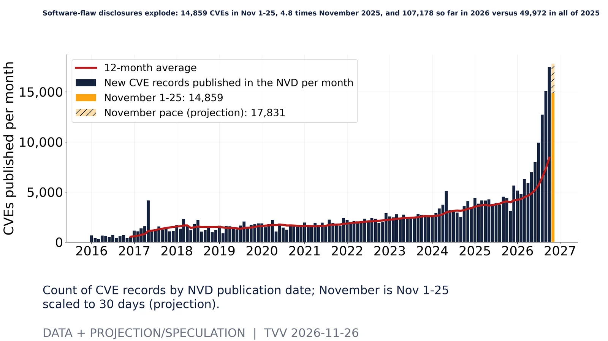
Software-flaw disclosures explode: 14,859 CVEs in Nov 1-25, 4.8 times November 2025, and 107,178 so far in 2026 versus 49,972 in all of 2025. Count of CVE records by NVD publication date; November is Nov 1-25 scaled to 30 days (projection). Source: https://nvd.nist.gov/vuln/search
Thanksgiving aurora odds are modest: NOAA forecasts a peak Kp of 5.00 (G1 storm) after 2 G1-level readings in the past week. Three-hour planetary Kp, UTC; orange bars are the NOAA forecast and are projections, not observations. Source: https://services.swpc.noaa.gov/products/noaa-planetary-k-index-forecast.json
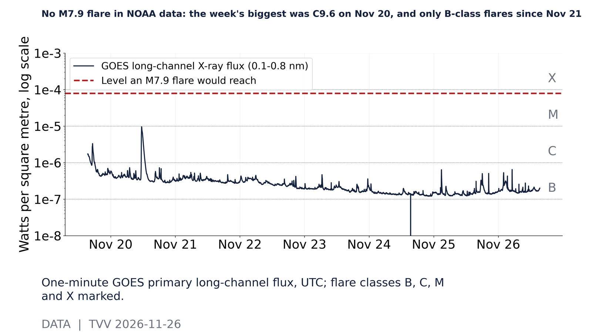
No M7.9 flare in NOAA data: the week's biggest was C9.6 on Nov 20, and only B-class flares since Nov 21. One-minute GOES primary long-channel flux, UTC; flare classes B, C, M and X marked. Source: https://services.swpc.noaa.gov/json/goes/primary/xrays-7-day.json
Data-center building hits $96B a year in September, up 90% in 12 months and 7.0 times the pre-ChatGPT rate. Census value of private construction put in place, data-center subcategory, SAAR. Dashed line is a projection. Source: https://www.census.gov/construction/c30/xls/privsatime.xlsx
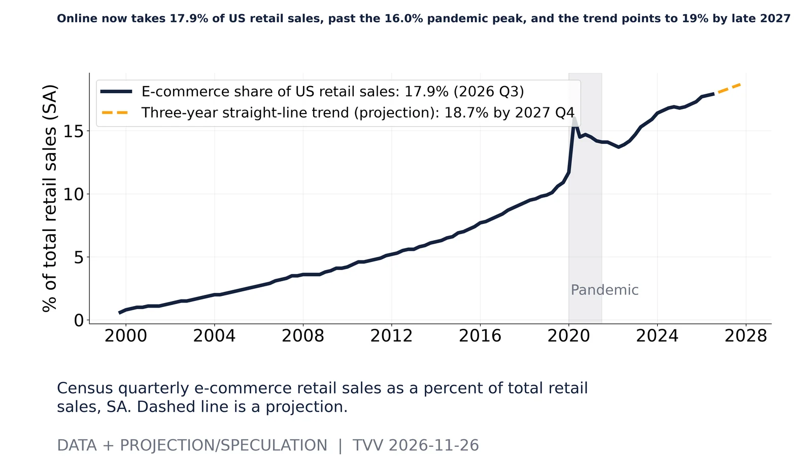
Online now takes 17.9% of US retail sales, past the 16.0% pandemic peak, and the trend points to 19% by late 2027. Census quarterly e-commerce retail sales as a percent of total retail sales, SA. Dashed line is a projection. Source: https://fred.stlouisfed.org/series/ECOMPCTSA
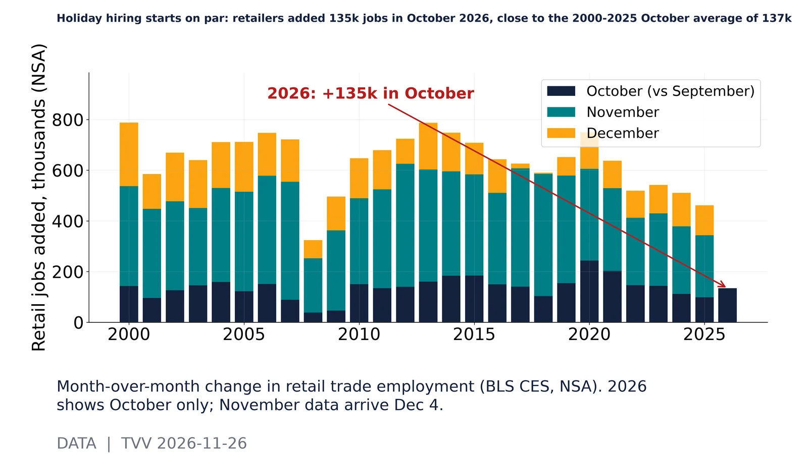
Holiday hiring starts on par: retailers added 135k jobs in October 2026, close to the 2000-2025 October average of 137k. Month-over-month change in retail trade employment (BLS CES, NSA). 2026 shows October only; November data arrive Dec 4. Source: https://fred.stlouisfed.org/series/CEU4200000001
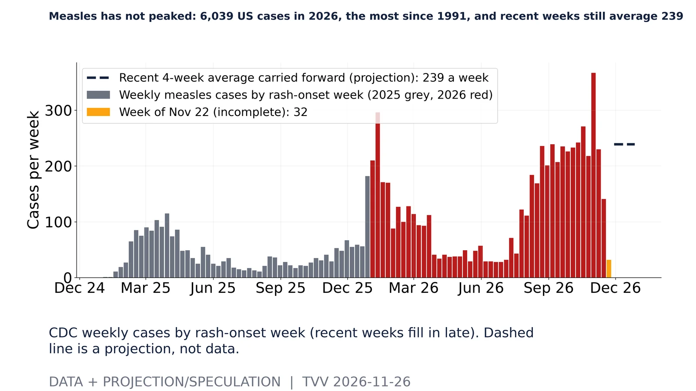
Measles has not peaked: 6,039 US cases in 2026, the most since 1991, and recent weeks still average 239. CDC weekly cases by rash-onset week (recent weeks fill in late). Dashed line is a projection, not data. Source: https://www.cdc.gov/measles/data-research/index.html
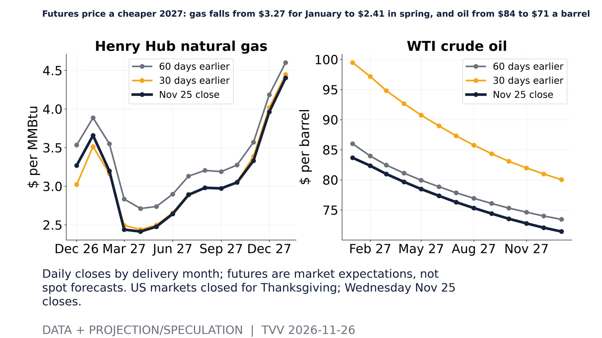
Futures price a cheaper 2027: gas falls from $3.27 for January to $2.41 in spring, and oil from $84 to $71 a barrel. Daily closes by delivery month; futures are market expectations, not spot forecasts. US markets closed for Thanksgiving; Wednesday Nov 25 closes. Source: https://www.cmegroup.com/markets/energy/natural-gas/natural-gas.quotes.html
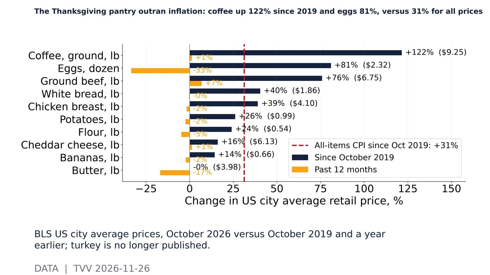
The Thanksgiving pantry outran inflation: coffee up 122% since 2019 and eggs 81%, versus 31% for all prices. BLS US city average prices, October 2026 versus October 2019 and a year earlier; turkey is no longer published. Source: https://fred.stlouisfed.org/series/APU0000708111
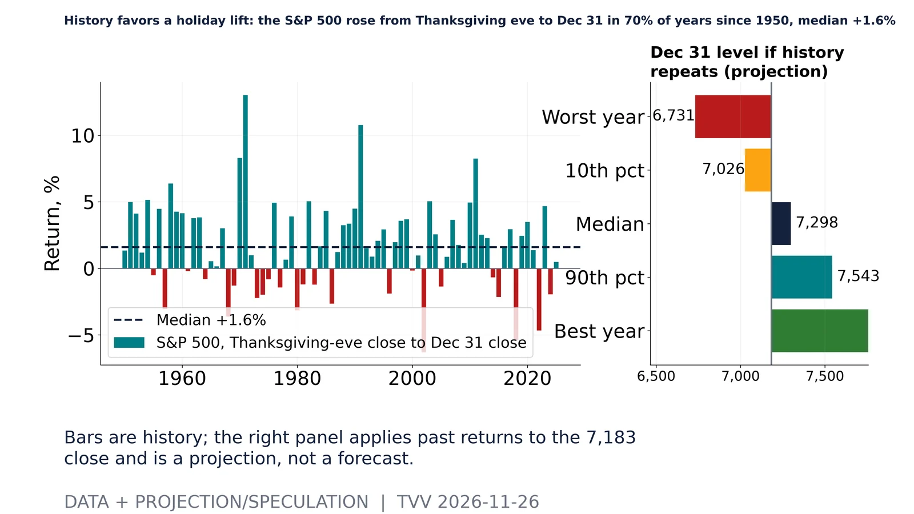
History favors a holiday lift: the S&P 500 rose from Thanksgiving eve to Dec 31 in 70% of years since 1950, median +1.6%. Bars are history; the right panel applies past returns to the 7,183 close and is a projection, not a forecast. Source: https://finance.yahoo.com/quote/%5EGSPC/history/
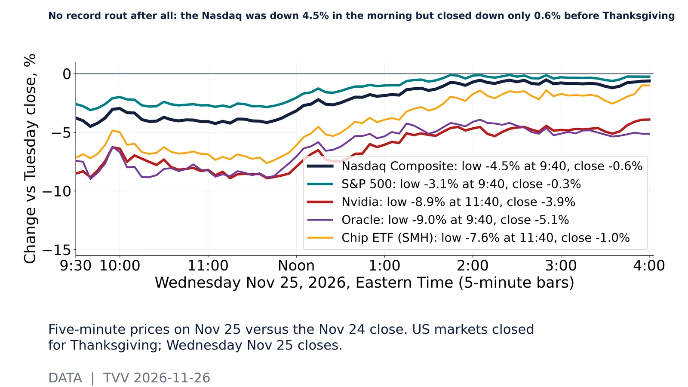
No record rout after all: the Nasdaq was down 4.5% in the morning but closed down only 0.6% before Thanksgiving. Five-minute prices on Nov 25 versus the Nov 24 close. US markets closed for Thanksgiving; Wednesday Nov 25 closes. Source: https://finance.yahoo.com/quote/%5EIXIC/history/
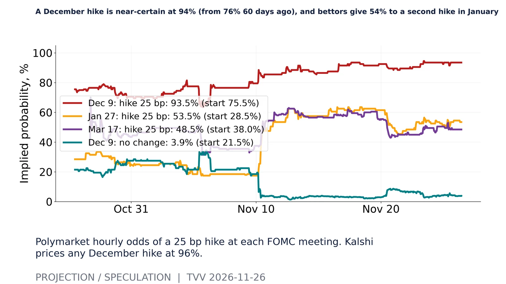
A December hike is near-certain at 94% (from 76% 60 days ago), and bettors give 54% to a second hike in January. Polymarket hourly odds of a 25 bp hike at each FOMC meeting. Kalshi prices any December hike at 96%. Source: https://polymarket.com/event/fed-decision-in-december-20260729232808632
Cloud prices lag inflation: hosting and data-processing prices rose 2.0% in a year to October, versus 6.5% for all producer prices. BLS producer price index, industry 518210 (computing infrastructure, data processing, web hosting), 12-month change. Source: https://fred.stlouisfed.org/series/PCU518210518210
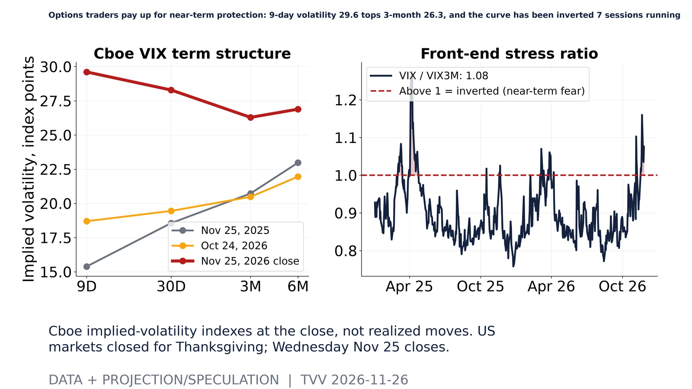
Options traders pay up for near-term protection: 9-day volatility 29.6 tops 3-month 26.3, and the curve has been inverted 7 sessions running. Cboe implied-volatility indexes at the close, not realized moves. US markets closed for Thanksgiving; Wednesday Nov 25 closes. Source: https://www.cboe.com/tradable_products/vix/term_structure/
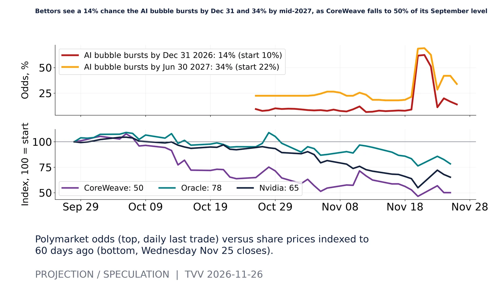
Bettors see a 14% chance the AI bubble bursts by Dec 31 and 34% by mid-2027, as CoreWeave falls to 50% of its September level. Polymarket odds (top, daily last trade) versus share prices indexed to 60 days ago (bottom, Wednesday Nov 25 closes). Source: https://polymarket.com/event/ai-bubble-burst-by